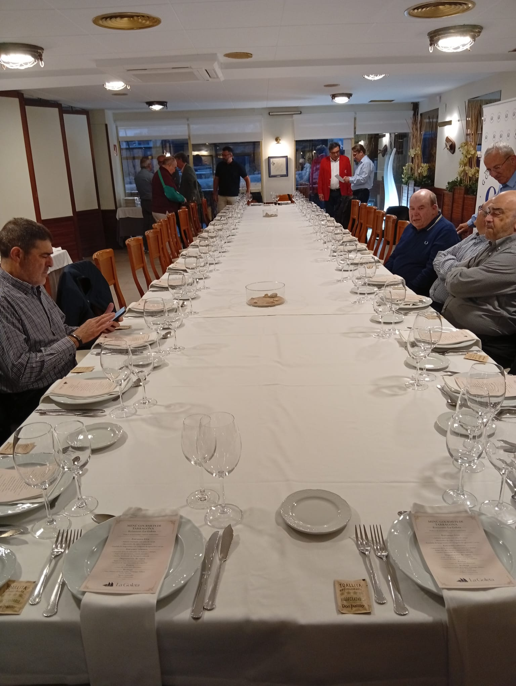
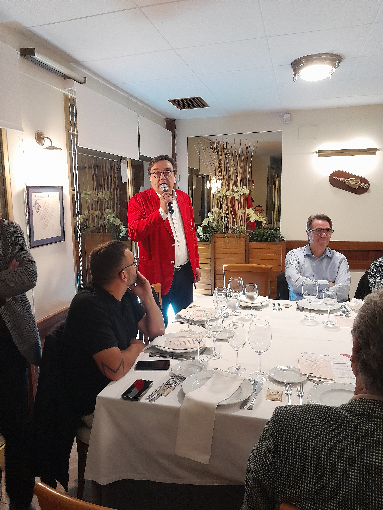
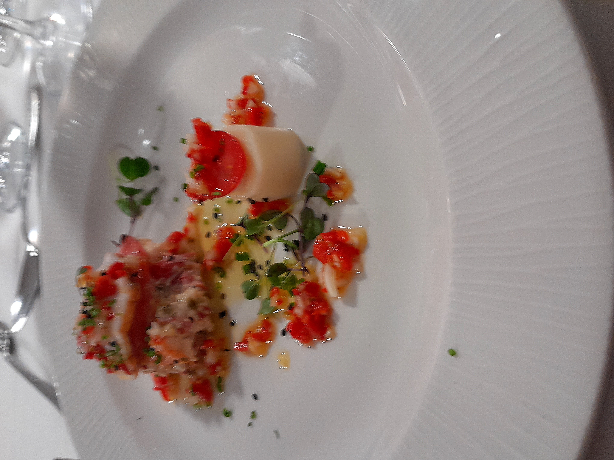
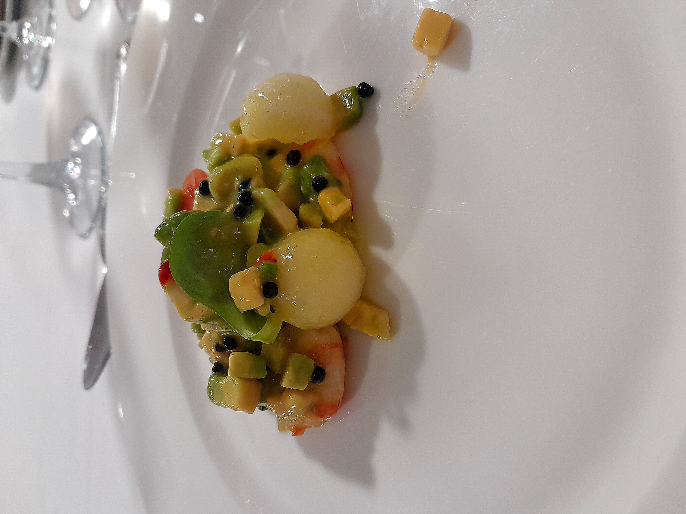
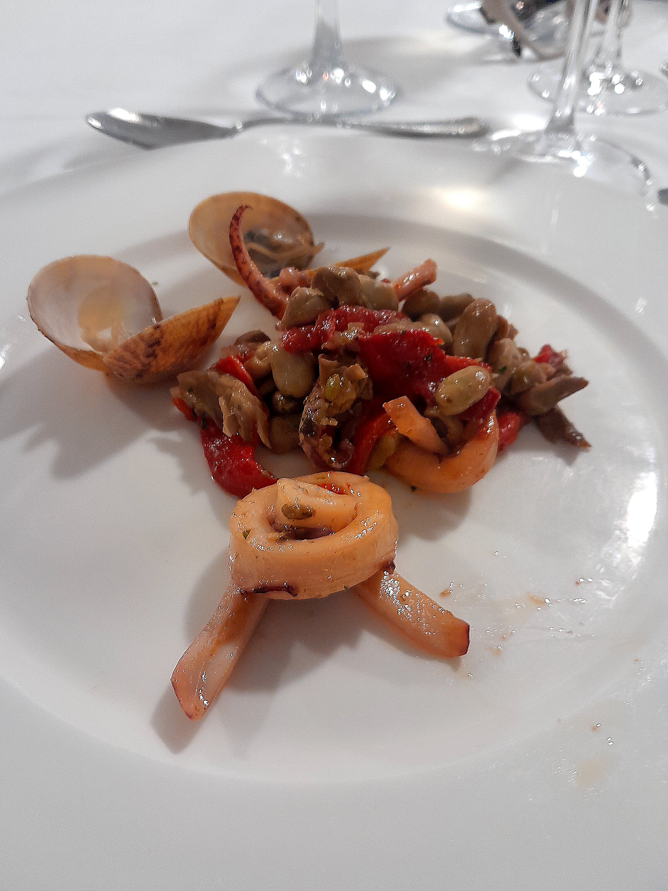
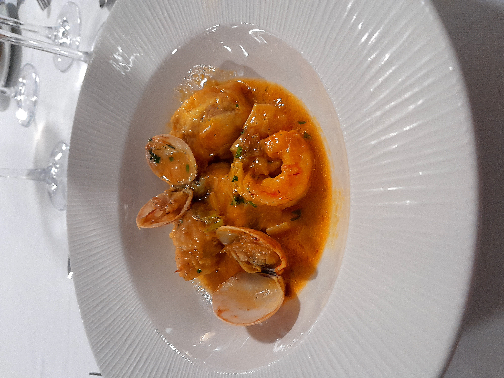
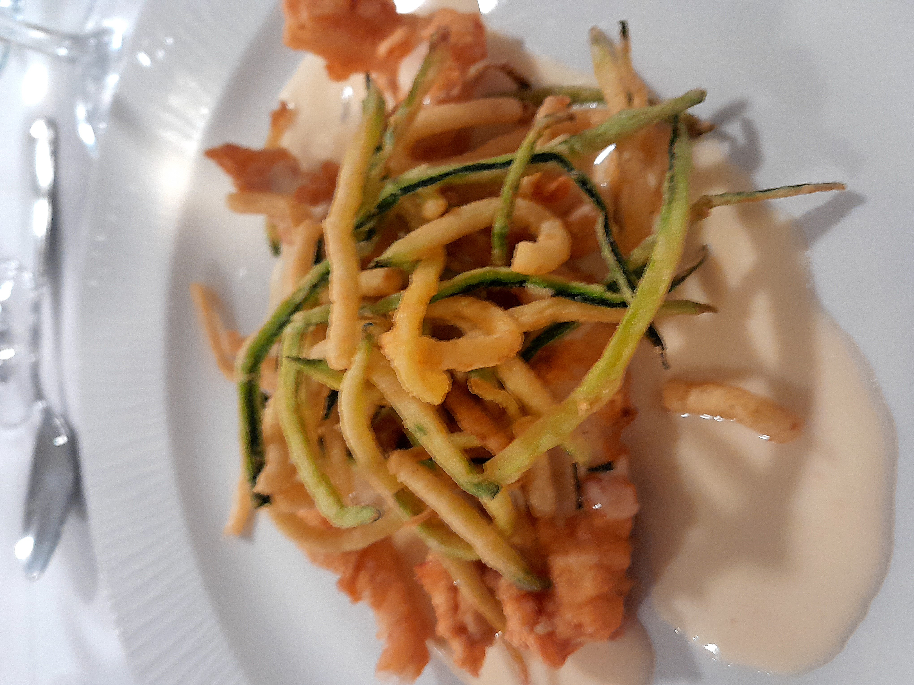
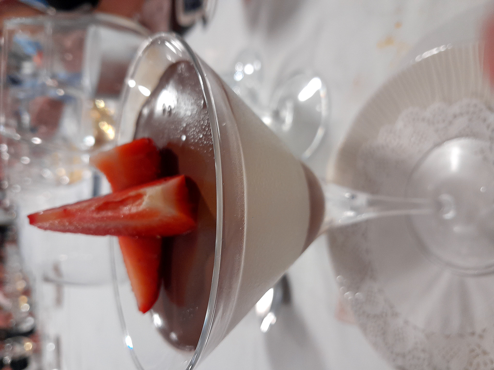
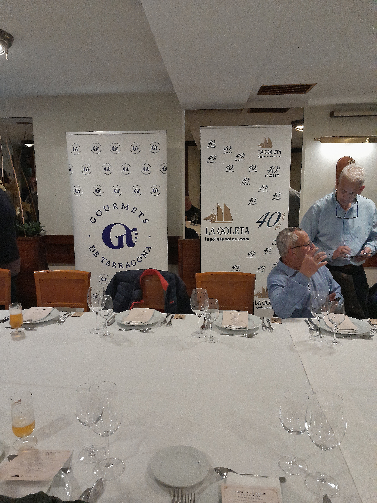

Cuarenta años de cocina sin concesiones
En el marco del recorrido gastronómico de la temporada, la asociación Gourmets de Tarragona realizó su segunda visita al restaurant La Goleta, en Salou. Fundado en 1986, el establecimiento llega a su 40º aniversario manteniendo una propuesta centrada en el producto del mar y la cocina mediterránea.
La velada contó con la presencia especial de José Vilaseca Rius, cofundador de los Casacas Rojas de Barcelona, que se unió a los treinta y seis comensales de la asociación.


José Vilaseca y los Casacas Rojas
José Vilaseca Rius, cofundador de los Casacas Rojas de Barcelona, se sentó con nosotros. Una institución gastronómica que lleva décadas recorriendo los mejores restaurantes con una mezcla única de rigor, humor e irreverencia.
Vilaseca compartió anécdotas del oficio, su visión de la gastronomía, el espíritu de una mesa bien llevada. Su presencia añadió una capa de significado a una noche que ya de por sí tenía mucho que decir.
Entrantes fríos
La apertura fijó el tono con tres propuestas que anticiparon el carácter del menú: producto de primera calidad, presentaciones reconocibles y ejecución técnica limpia.
El salmón marinado con salsa de caviar, el montadito de rape y langostinos, y la ensalada de langostinos con vinagreta de aguacate y caviar configuraron un primer acto sólido, donde el marisco y el pescado tomaron el protagonismo desde el inicio.


Entrantes calientes
Los entrantes calientes marcaron la transición hacia una cocina de mayor profundidad, manteniendo siempre el producto del mar como eje central.
Los calamares de la ría salteados con habitas y almejas, el pulpo con ajos tiernos y patata panadera, y la gamba pantxuda de Tarragona salteada representaron el mejor argumento a favor de una cocina que no busca artificios.

Degustación de rapes
La parte central del menú estuvo dedicada al rape en dos preparaciones distintas. El rape con salsa de puerros y azafrán mostró la versión más clásica del producto, con una salsa de fondo bien ejecutada.

Y entonces llegó la tempura de rape con crema de roquefort. El plato que nadie esperaba al final de la cena. Textura crujiente, crema untuosa, equilibrio exacto. Sin dramatismo ni presentación teatral. Solo técnica y producto. El momento más aplaudido de la noche.

Postre
La copa de coco con chocolate y fresas cerró el recorrido con elegancia. Un final clásico, limpio, sin estridencias. En La Goleta, el postre no compite con los platos. Los acompaña.

Un vino único para toda la noche
Ignacio Ureña tomó una decisión poco habitual: un único vino para acompañar todos los platos. La coherencia del maridaje resultó más poderosa que la variedad.
Macabeo-Parellada
La valoración final de los socios se reflejará en las votaciones del recorrido gastronómico anual.
Cuarenta años de ceremonial en sala
Ignacio Ureña, maître y sumiller durante años, dirige ahora el proyecto. Servicio clásico, desde bandeja, con precisión y sin un solo incidente en treinta y seis comensales.
Ignacio contó una anécdota que resume la filosofía del lugar: durante años, Emilio Vicente, fundador, no mostró la carta a los clientes. Los platos se vendían directamente. La confianza en quien cocina, por encima de la descripción impresa. «Ahora ya la enseñamos», bromeó. Cuarenta años después.

El diploma y el grito de guerra
El presidente Juan Manuel Rodríguez entregó el diploma de visita a Ignacio Ureña. Y entonces, sin premeditación, surgió de la sala un grito colectivo: ¡FESTIVAL! — el grito de guerra de los Casacas Rojas. Vilaseca lo había mencionado durante la velada, y toda la sala lo coreó al unísono. Treinta y seis personas cerrando cuarenta años de La Goleta con el grito de guerra de una institución gastronómica barcelonesa. Fue honesto, fue real, fue de esas cosas que no se olvidan.
Entrega del diploma a Ignacio Ureña y el grito espontáneo de «¡FESTIVAL!» · La Goleta, 9 de abril de 2026
Cuarenta años de coherencia
La Goleta no nos sorprendió con alardes. Nos confortó con coherencia. Y eso, en el contexto actual, donde la tendencia es reinventarse constantemente, es un lujo que la Costa Daurada merece conservar. Cuarenta años. Y sin intención de cambiar lo que funciona.

Miembros de Gourmets de Tarragona durante la visita a La Goleta · Salou — Abril 2026
La valoración final de los socios se reflejará en las votaciones del recorrido gastronómico anual.